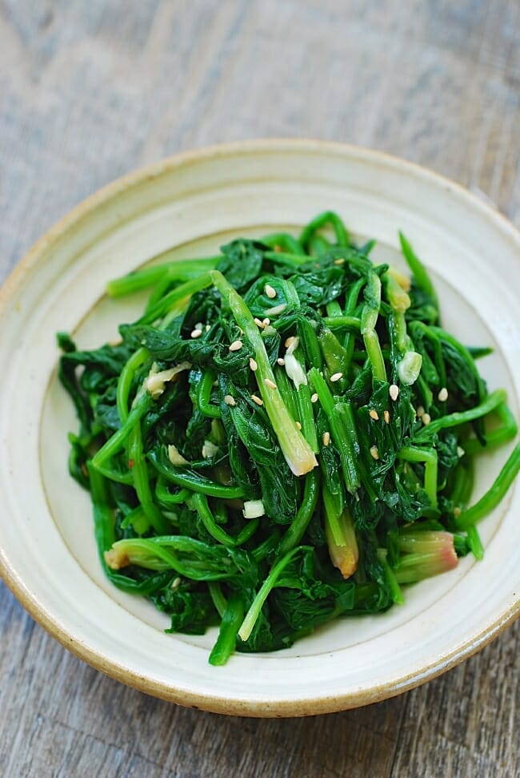

Korean Seasoned Spinach

Korean seasoned spinach is a simple healthy sidedish.
Ingredients
- Spinach
- Soy Sauce
- Sesame Oil
- Sesame Seeds
- Olive Oil
Recipe Instructions
- Trim the roots off the spinach and wash it thoroughly
- Blanch the spinach in salted boiling water for 20-30 seconds until wilted
- Remove the spinach from the pot and shock in icy cold water
- Drain and squeeze out excess water
- Cut into 8cm pieces
- Mix in olive oil, sesame seeds, and sesame oil and serve
Return to main page